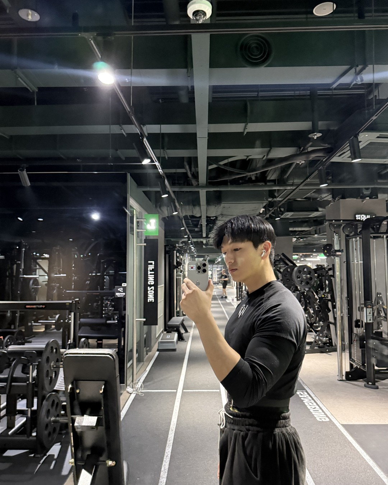
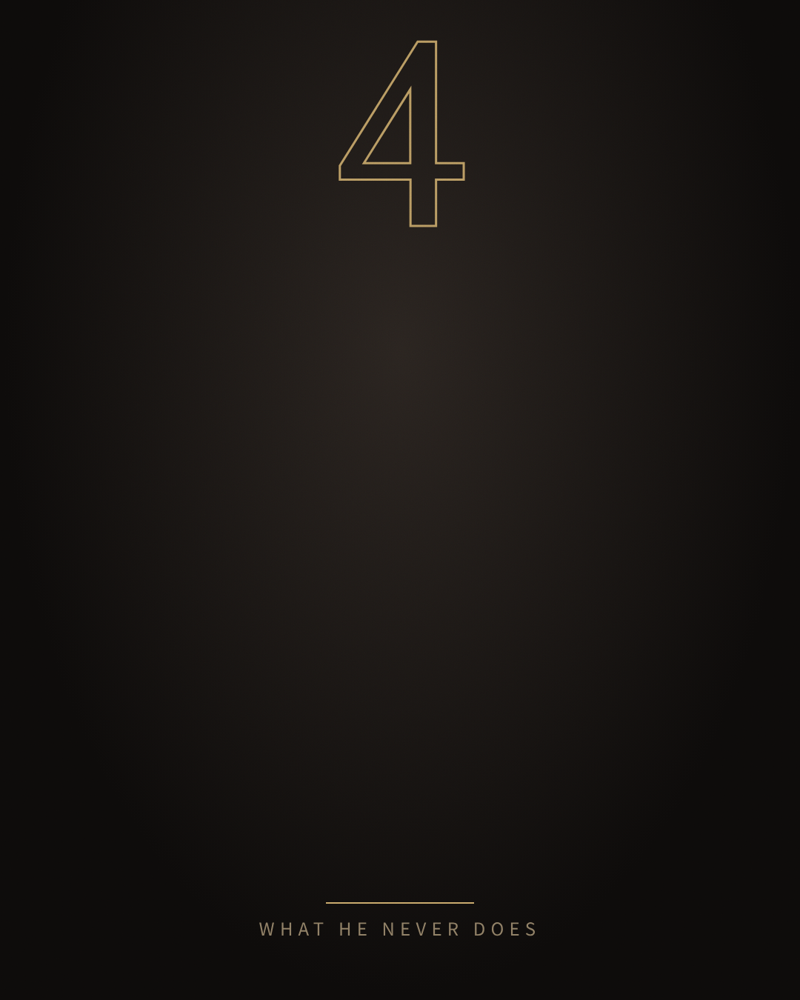
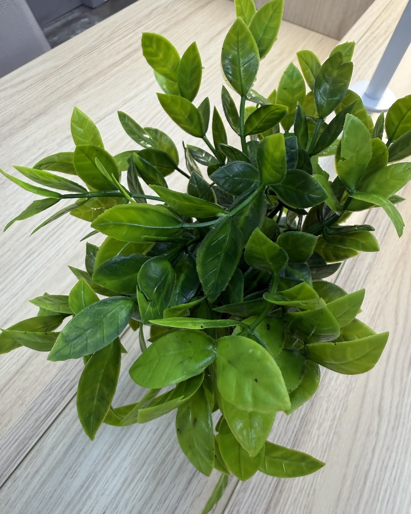
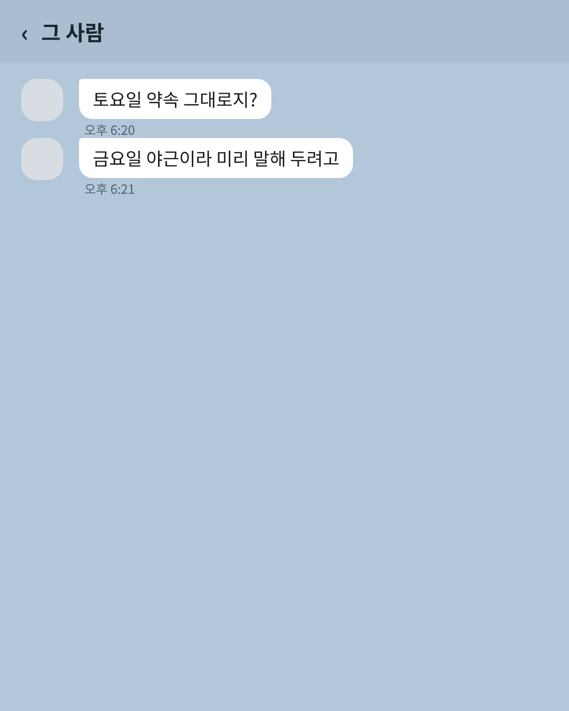
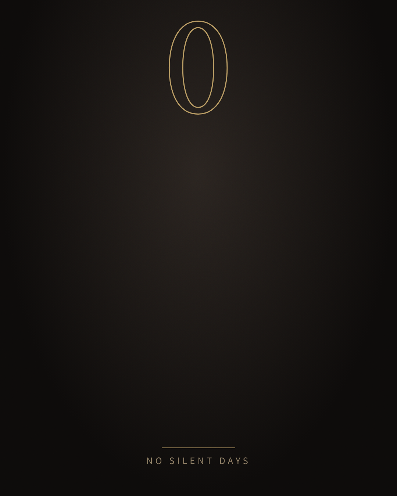
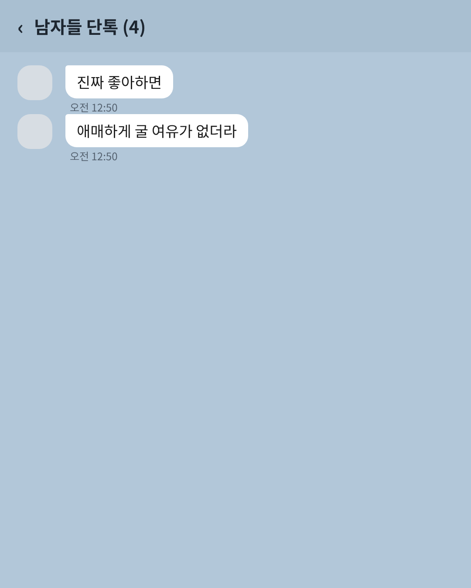
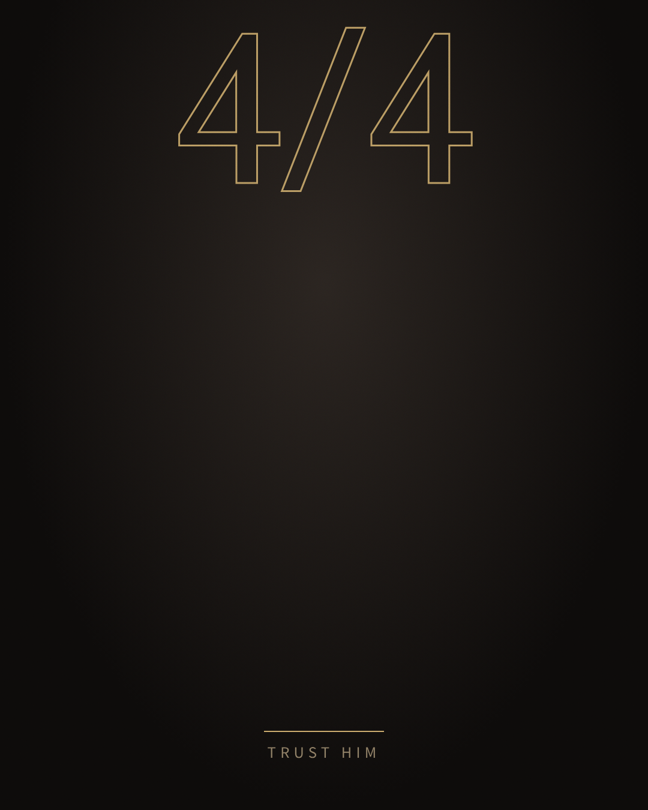
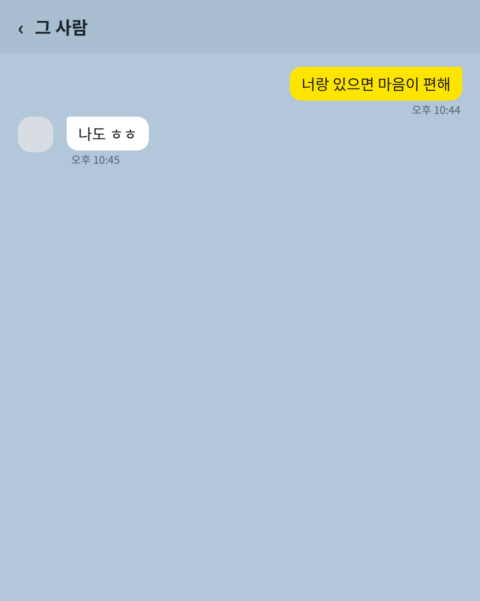
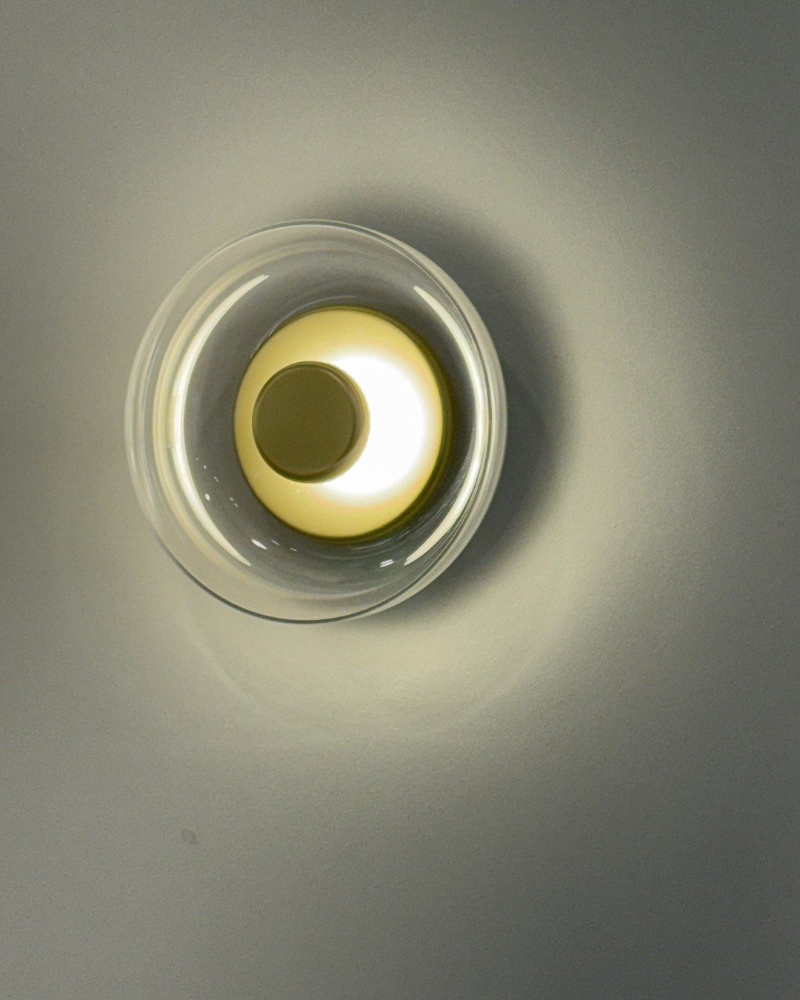
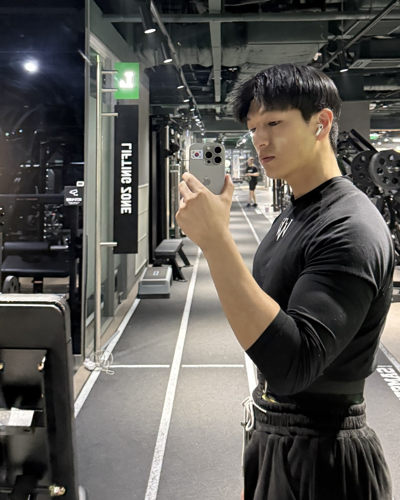

남자가 진심이면
절대 안 하는 행동 4
(말보다 "안 하는 것"이 더 정직해요.)
1/14
@mszexc
넘겨보세요 →

진심은 하는 행동보다
안 하는 행동에서 먼저 보여요.
(이 네 가지를 보세요.)
2/14
@mszexc
남자들끼리 하는 말 #78

첫 번째.
약속을 당일에 바꾸지 않아요.
(바쁠 땐 미리 말해요. 당일 취소가 습관이 되지 않아요.)
3/14
@mszexc
남자들끼리 하는 말 #78

진심인 남자에게
당신과의 약속은 일정의 기준이에요.
(남는 시간에 끼워 넣지 않아요.)
4/14
@mszexc
남자들끼리 하는 말 #78
두 번째.
친구들 앞에서 당신을 깎아내리지 않아요.
(농담으로도요.)
5/14
@mszexc
남자들끼리 하는 말 #78

세 번째.
싸운 뒤 연락을 무기로 쓰지 않아요.
(며칠씩 잠수 타며 당신이 먼저 오길 기다리지 않아요.)
6/14
@mszexc
남자들끼리 하는 말 #78
네 번째.
다른 여자와의 여지를 남겨두지 않아요.
(애매한 연락은 스스로 정리해요.)
7/14
@mszexc
남자들끼리 하는 말 #78

남자들끼리는 이렇게 말해요.
"진짜 좋아하면 애매하게 굴 여유가 없더라."
(진심이면 남자는 단순해져요.)
8/14
@mszexc
남자들끼리 하는 말 #78
반대로 네 가지 중 하나가
반복된다면, 한 번 더 보세요.
(한 번은 실수, 반복은 태도예요.)
9/14
@mszexc
남자들끼리 하는 말 #78

이 네 가지를 지키는 남자는
말이 서툴러도 믿어도 돼요.
("사랑해"를 자주 안 해도요.)
10/14
@mszexc
남자들끼리 하는 말 #78

이런 남자에게는 이렇게.
"너랑 있으면 마음이 편해."
(남자는 "편하다"는 말을 가장 오래 기억해요.)
11/14
@mszexc
남자들끼리 하는 말 #78

그리고 당신도
그와의 약속을 기준으로 대해 주세요.
(진심은 서로 지켜야 오래가요.)
12/14
@mszexc
남자들끼리 하는 말 #78

진심은 화려한 행동이 아니라
하지 않는 것에서 보여요.
13/14
@mszexc
남자들끼리 하는 말 #78

이것만 기억하세요.
진심인 남자는, 당신을 불안하게 하는 일을 안 해요.
남자가 하는 말의 뜻은 전자책 1·2권에 · 프로필 링크에서 무료로 받아보세요
14/14
@mszexc
남자들끼리 하는 말 #78